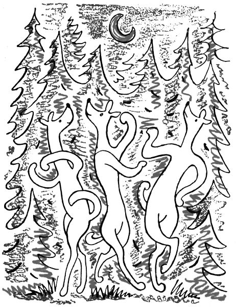

Pohádka psí
Pokud vůz mého dědečka, toho mlynáře, vozil po vesnicích chleba a zpátky do mlýna pěkné zrní, znal Voříška kdekdo; no, Voříšek, řekl by vám každý, to je přece ten pejsek, co sedá na kozlíku vedle starého Šulitky a kouká, jako by řídil celý vůz; a když to jde do kopce nějak pomaličku, začne vám štěkat, a hned se kola zatočí rychleji, Šulitka zapráská, Ferda i Žanka, totižto oba koně našeho dědečka, zaberou, a teď celý vůz slavně běží do vsi a vytřásá ze sebe samou krásnou vůni božího daru. Takhle, děti, jezdil Voříšek nebožtík po celé farnosti.
Ba, za jeho časů nebyly ještě žádné tyhle splašené automobily; tehdy se jezdilo pomalu, pořádně, a aby to bylo slyšet. Žádný šofér na automobilu neumí tak krásně práskat bičem jako nebožtík Šulitka, dej mu pánbůh věčnou slávu, nebo tak zamlaskat na koně, jako to uměl on; a vedle žádného šoféra nesedí moudrý Voříšek, nekučíruje, neštěká, nepouští hrůzu, nic. Takový automobil jenom přeletí a zasmrdí, a teď koukej, kde už je; ani ho vidět není pro samý prach. Inu, to Voříšek jezdil důkladněji; na půlhodiny předem lidé nastavili ucho, začichali a řekli: Aha! To už věděli, že k nim jede chleba, a postavili se na práh, aby mu dali dobrýtro. A nyčko už tedy opravdu běží dědečkův vůz do vesnice, Šulitka mlaská jazykem, Voříšek štěká na kozlíku a najednou hup, skočí Žankovi na zadek (však to byl zadek, požehnej pánbůh! široký jako stůl, čtyři lidé by na něm jíst mohli); a teď tancuje Žankovi po hřbetě, běhá od chomoutu k ocasu, od ocasu k chomoutu a hubu si roztřepit může samou radostí: Haf, haf, kluci, sákra, to jsme to sjeli, já a Žanka a Ferda; sláva! A kluci vyvalují oči; denně sem přijede chleba, a vždycky taková sláva, panebože, jako by sám císař jel! – Ba, jak říkám, tak důkladně se už dávno nejezdí jako za časů Voříškových.

A štěkat uměl Voříšek, jako když z pistole střílí. Prásk! napravo, že tamhle husy samým lekem běží, běží a zastaví se až v Polici na rynku, celé udivené, kde se tu vzaly; prásk! nalevo, že holubi z celé vesnice vyletí, zakrouží a snesou se až někde na Žaltmanu, neřkuli až na pruské straně; tak silně uměl štěkat Voříšek, psisko mizerné, a div mu pak ocas neuletěl, jak jím švihal radostí, když tohle natropil. Inu, měl nač být pyšný; tak silný hlas nemá ani generál, ba někdy ani poslanec.
A přece byl čas, že Voříšek neuměl ani trochu štěkat, třeba už byl výrostek a měl takové zuby, že rozkousal dědečkovi nedělní holinky. Totiž musíte vědět, jak přišel dědeček k Voříškovi, či spíš Voříšek k dědečkovi. Šel jednou dědeček z hospody pozdě domů, a že byla noc a že mu bylo veselo, a snad i proto, aby zahnal zlé duchy, si cestou zpíval. Najednou ztratil potmě dobrou notu a musel se zastavit, aby ji hledal. A co ji tak hledá, slyší nějaké vrnění, pištění, kničení na zemi u svých nohou; pokřižoval se a hmatal po zemi, co to jako je. Nahmatal huňaté teplé klubíčko, do dlaně se mu vešlo, a bylo to měkké jako samet; a sotva to vzal do ruky, přestalo to vrnět a cucalo mu prst, jako by byl z medu. Na to se musím podívat, pomyslil si dědeček a donesl to s sebou domů, do mlýna. Babička, chudera, čekala na dědečka, aby mu mohla dát „dobrou noc“; ale dřív než se mohla jak náleží ozvat, řekl filuta dědeček: „Koukej, Heleno, co ti nesu.“ Babička si na to posvítila, a heleme, vždyť to bylo štíně, můj ty Tondo! psí miminko ještě slepé a žluté, jako vyloupnutý oříšek. „Koukejme,“ podivil se dědeček, „ale pejsánku, čípak vlastně jsi?“ Pejsánek, to se ví, neřekl nic; třásl se na stole jako hromádka neštěstí, až mu krysí ocásek poskakoval, a pištěl přežalostně; a tuhle, i prachkujóne, se pod ním udělala loužička a rostla jako špatné svědomí. „Karle, Karle,“ zakývala vážně babička na dědu hlavou, „kdepaks nechal rozum? Vždyť to štíně musí pojít bez mámy.“ Toho se dědeček lekl. „Honem, Heleno,“ povídá, „ohřej mlíčko a uchystej houstičku.“ Babička všechno uchystala, dědeček namočil měkkou střídu do mléka, omotal ji cípem kapesníku a udělal tak dobrý cumel, že se z něho štěně nacucalo, až mělo bříšek jako buben.
„Karle, Karle,“ zakývala zas babička hlavou, „kdepaks nechal rozum? Kdopak bude to štíně hřát, aby nepošlo zimou?“ Ale kdež dědeček! tomu něco namítat! Sebral štěně a rovnou s ním do stáje; a panečku, tam bylo teplo, co ho Ferda a Žanka nadýchali! Oba koně už spali, ale když přišel hospodář, zvedli hlavu a točili se po něm moudrýma, laskavýma očima. „Žanko, Ferdo,“ řekl dědeček, „ať tomu Voříškovi neublížíte, víme? Já vám ho dávám do ochrany.“ A s tím položil malého Voříška před ně do slámy. Žanka si čichl k divnému tvorečkovi a cítil z něho dobré ruce hospodářovy; i pošeptal Ferdovi: „Je náš.“ A bylo to.

Tak rostl Voříšek ve stáji, krmen cumlíkem z kapesníku, až se mu otevřely oči a mohl se napít sám z misky. A teplo mu bylo jako u mámy, a tak se z něho brzo udělal takový malý uličník s hloupou hlavou, inu, štěně; neví ani, kde má zadek, na který si má sednout, sedne si na vlastní hlavu a diví se, že to tlačí; neví, co s ocasem, a protože umí počítat jen do dvou, plete si všechny své čtyři nohy; nakonec sebou údivem plácne a vyplazuje jazejček pěkně růžový jako lísteček šunky. Ale vždyť každé štěně je takové, zkrátka jako děti. Víc by vám řekli Žanka a Ferda; řekli by vám, jaké je to trápení pro starého koně, dávat pořád pozor, aby neušlápl to bláznivé psisko; to víte, lidičky, kopyto není bačkora a musí se stavět pomaloučku, polehoučku, aby něco na podlaze nezačalo bolestně kvičet a žalovat. Ba, je to kříž s dětmi, řekli by vám Žanka a Ferda.
A byl už z Voříška celý pes, veselý a zubatý jako každý jiný, ale něco na něm nebylo v pořádku: nikdo ho neslyšel štěkat ani vrčet. Jenom pištěl jaksi a skučel, ale štěkání to nebylo. Řekla si jednou babička: Copakže Voříšek neštěká? Přemýšlí, tři dny chodí jako tělo bez duše a čtvrtého dne povídá dědečkovi: „Copakže Voříšek nikdy neštěká?“ Přemýšlí dědeček, tři dny chodí a pořád vrtí hlavou. Čtvrtého dne povídá Šulitkovi, kočímu: „Copakže náš Voříšek nikdy neštěká?“ Šulitka to vzal důkladně; šel do hospody a přemýšlel tam tři dny a tři noci; čtvrtého dne se mu už chtělo spát, nějak se mu mátla hlava, i zavolal hospodského a tahal z kapsy čtyráky za outratu. Počítal, počítal, ale sám čert se mu do toho pletl, že se ne a ne dopočítat. „Inu, Šulitko,“ povídá hospodský, „copak tě maminka nenaučila počítat?“ V tu chvíli Šulitka nechal outraty, plácl si do čela a běžel k dědečkovi. „Hospodáři,“ křičel ve dveřích, „už to mám! Voříšek proto neštěká, že ho tomu jeho máma nenaučila!“
„Namoutě,“ řekl dědeček, „to je pravda; mámu Voříšek nezná, Ferda ani Žanka ho štěkat nenaučili, pes žádný v sousedství není, a tak Voříšek ani neví, co to štěkání je. Víš, Šulitko,“ povídá, „musíš ho naučit štěkat.“ Sedl si Šulitka ve stáji k Voříškovi a učil ho štěkat. „Haf haf,“ vykládal mu; „dávej pozor, jak se to dělá; nejdřív vrrrrr tadyhle v krku, a pak to najednou pustíš z huby: hafhaf. Vrrrr, vrrrrr, hafhaf haf!“ Voříšek stříhal ušima, tohle byla muzika, která se mu jaksi líbila, ani sám nevěděl proč; a najednou ze samé radosti zaštěkal sám. Bylo to štěknutí trochu divné, kviklo to, jako když nůž po talíři sjede, ale každý začátek je těžký; však vy jste také hned napoprvé neuměli abecedu. Ferda i Žanka poslouchali, cože starý Šulitka štěká; konečně nad ním pokrčili rameny a nikdy si už Šulitky nevážili. Ale Voříšek měl k štěkání náramný talent, učení mu šlo rychle, a když poprvé vyjel s vozem, šlo to prásk! nalevo, prásk! napravo, jako když z pistole střílí; však do nejdelší smrti se Voříšek nenabažil svého štěkání a štěkal celý boží den; takovou radost mu dělalo, že se tomu pořádně naučil.
Ale jezdit se Šulitkou a kučírovat, to nebylo to jediné, co měl Voříšek na starosti. Každý večer obešel mlýn a dvůr, je-li všechno na svém místě, usápl se na slepice, aby už nekdákaly jako tetky na trhu, a pak se postavil před dědečka, vrtěl ocasem a díval se bystře, jako by chtěl říci: „Jen už jdi spat, Karle, já dám na všechno pozor.“ Dědeček ho tedy pochválil a šel spat v bázni boží. Ve dne však dědeček často obcházel po vesnicích a městečkách, aby kupoval obilí a ledacos jiného, třeba jetelové semínko, čočku nebo mák; a tehdy běžel Voříšek s ním, a když šli v noci domů, nic se nebál a trefil i tehdy, když se samotnému dědečkovi zmátla cesta.
Jednou tedy kupoval dědeček někde semínko, ale vždyť to bylo tuhle ve Zličku; koupil a stavil se na skok v hospodě. Voříšek chvíli čekal před hospodou; tu však mu přišlo do nosu cosi dobrého, inu, taková krásná vůnička z kuchyně, že se tam musel podívat. A namouduši, jedli tam domácí lidé jitrnice; i sedl Voříšek a čekal, nepadne-li pod stůl ňáké to rozkošné střívko. A zatímco čekal, zastavil před hospodou vůz dědečkova souseda, jakpak se honem jmenoval, no třeba Joudal; Joudal našel dědečka v šenkovně, slovo dalo slovo, a už se oba sousedi hrnuli do vozu, že se jako svezou domů společně. Vyjeli, a dědeček zapomněl na Voříška jako na smrt, zatímco Voříšek v kuchyni panáčkoval před jitrnicemi.
Když domácí lidé dojedli, hodili kůžičky z jitrnic kočce na pec; Voříšek utřel hubu a teprve teď si vzpomněl, kde nechal dědečka. Hledal, čichal po celé hospodě, ale dědeček nikde. „Voříšku,“ řekl hostinský, „tvůj pán jel tam, támhle,“ a ukazoval rukou. Tohleto Voříšek pochopil a pustil se domů sám; nejdřív šel po silnici, ale pak si řekl: To bych byl blázen; tudyhle přes kopec si nadběhnu. Pustil se tedy přes kopec a lesem. Byl už večer, byla už noc; ale Voříšek se pranic nebál. Mně, myslel si, nikdo nic neukradne. Ale hlad měl jako pes.
Byla už noc a vyšel měsíc úplněk; a když někde se stromy rozestoupily v průseku či na pasece, zjevil se měsíc nad korunami, a tu bylo tak krásně, tak stříbrno, že Voříškovi úžasem tlouklo srdce. Les šuměl tichounce, jako by na harfy hrál. Teď běžel Voříšek lesem jako černočernou chodbou; ale najednou se před ním dělalo stříbrné světlo, harfy jako by hrály hlasitěji, a na Voříškovi se zježil každý chlup; i přikrčil se k zemi a koukal jako omámený. Byl před ním stříbrný palouk a na něm tančily psí rusalky. Byli to krásní bílí psi, ale načisto bílí, zrovna průhlední, a tak lehýncí, že ani rosu z trávy nestřásli; inu, psí rusalky to byly, to poznal Voříšek hned, protože jim scházel ten jistý zajímavý zápašek, po kterém pes pozná pravého psa. Leží Voříšek v mokré trávě a oči si může vyhledět. Rusalky tančí, prohánějí se, zápasí spolu nebo se točí dokolečka za svým ocasem, ale všechno tak lehce, tak vzdušně, že se ani stebélko pod nimi nehnulo. Voříšek dával dobrý pozor: začne-li se některá z nich drbat nebo si zakusovat blechu, pak to není rusalka, ale bílý pes. Ale žádná se nepodrbala ani blechu nezakusovala; to už je tedy svaté, že to byly rusalky. Když byl měsíc hodně vysoko, zvedly rusalky hlavy a začaly jemně, krásně výt a zpívat; kdepak, ani orchestr v Národním to tak nedovede. Voříšek plakal pohnutím a byl by zpíval s sebou, kdyby se nebál, že všechno pokazí.
Když dozpívaly, lehly si kolem jakési vznešené psí stařeny, byla to asi nějaká mocná víla nebo kouzelnice, celá stříbrná a vetchá. „Povídej nám,“ prosily všechny rusalky.

Stará psí víla se zamyslila a povídala pak: „Budu vám vypravovat, jak stvořili psi člověka. Když Pánbůh stvořil celý svět a všechna zvířata, postavil jim v čelo psa jako nejlepšího a nejmoudřejšího. Všechna zvířata v ráji žila a umírala a zase se rodila šťastně a spokojeně, jen psi byli čím dál smutnější. Ptal se tedy Pánbůh psů: ‚Proč jste smutní, když ostatní zvířata se radují?‘ I řekl nejstarší pes: ‚Víš, Panebože, těm ostatním zvířatům nic neschází; ale my psi máme kousek rozumu tadyhle v hlavě a tím rozumem poznáváme, že je něco vyššího než my, že jsi Ty, ó Stvořiteli. Ke všemu si můžeme čuchnout, jenom k Tobě ne, a to nám psům tuze schází. Pročež, ó Pane, splň naši touhu a stvoř nám nějakého boha, ke kterému bychom si mohli čuchnout!‘ I usmál se Pánbůh a řekl: ‚Přineste mi nějaké kosti a já vám stvořím boha, ke kterému byste si mohli čuchnout.‘ I rozběhli se psi a každý přinesl nějakou kost: ten lví, ten koňskou, ten velbloudí, ten kočičí, zkrátka ode všech zvířat, jen žádnou psí kost ne; neboť žádný pes se nedotkne ani psího masa, ani psí kosti. Byla pak těch kostí velká hromada a z těch kostí udělal Bůh člověka, aby psi měli svého boha, ke kterému se může čuchnout. A protože je člověk udělán ze všech zvířecích kostí, jen ze psích ne, má vlastnosti všech zvířat: má sílu lva, pracovitost velblouda, lstivost kočky a velkodušnost koně, jen psí věrnost ne, jen psí věrnost ne!“
„Povídej ještě něco,“ prosily psí rusalky znovu.
Stará psí víla se zamyslila a pak počala: „Povím vám tedy, jak se dostali psi na nebe. Víte, že duše lidí jdou po smrti na hvězdy, ale pro duše psí nezbyla žádná hvězda, a duše psí chodily po smrti spát do země. To bylo až po časy Krista Pána. Když Krista Pána lidi bičovali u sloupu, zůstalo tam moc krve, moc krve. A jeden hladový pes bez pána přišel a lízal tu krev Krista Pána. ‚Panenko Maria,‘ vykřikli andělé v nebi, ‚vždyť ten pes přijal krev Páně!‘ ‚Když přijal krev Páně,‘ řekl Bůh, ‚vezmeme jeho duši na nebe.‘ I udělal novou hvězdu, a aby se poznalo, že je pro psí duše, udělal k ní ocas. A sotva ta psí duše přišla na hvězdu, měla z toho takovou ukrutnou radost, že začala běhat, běhat, běhat v nebeském prostoru jako pes na louce, a ne pořádně po cestě jako ostatní hvězdy; a takovým psím hvězdám, co rejdí po nebi a mrcají ocasem, se říká komety.“
„Povídej ještě něco,“ prosily psí rusalky do třetice.
„Tedy vám povím,“ začala stará víla, „že před dávnými lety měli psi na zemi království a veliký psí zámek. Ale lidé záviděli psům jejich království na zemi a čarovali tak dlouho, až se psí království i se zámkem propadlo hluboko do země. Ale kdo by hrabal na pravém místě, dohrabal by se do jeskyně, kde zůstal psí poklad.“
„Jaký je psí poklad?“ ptaly se rusalky dychtivě.
„Inu,“ povídala stará víla, „je to takový sál přenáramné krásy. Sloupy jsou z nejkrásnějších kostí, ale ne okousaných, kdepak; je na nich tolik masa jako na husím stehýnku. Pak je tam uzený trůn a k němu vedou stupně z nejčistšího špeku. A na těch stupních je koberec ze samých střívek od jitrnic, a na těch střívkách je prejtu na prst tlustě…“
To už nemohl Voříšek vydržet. Vyrazil na palouk a volal: „Ha ha, kde je ten poklad? Ha ha, kde je psí poklad?“
Ale v tutéž chvíli zmizely rázem všechny psí rusalky i stará psí víla. Voříšek si protíral oči; ale nebylo tu nic než stříbrný palouček, ani stéblo nebylo zcucháno tancem rusalek, ani rosička neskanula na zem. Jen pokojný měsíc zářil na líbezný palouk a kolem dokola stál les jako černočerná hradba.
Tu vzpomněl si Voříšek, že doma ho čeká aspoň chleba ve vodě nadrobený, i rozběhl se domů, co mu nohy stačily. Ale od té doby, když někdy šel zase s dědečkem po lukách nebo lesích, vzpomněl si časem na psí poklad propadlý v zemi a začal hrabat, zuřivě hrabat všema čtyřma hlubokou díru do země. A že to nejspíše prozradil také psům ze sousedství, a ti zas jiným, a jiní zase dalším, stává se všem psům na světě, že si někde v polích vzpomenou na propadlé psí království a hrabou do země díru a čuchají, čuchají, čuchají, není-li z hloubi země cítit uzený trůn bývalé psí říše.
Národní listy 25. 12. 1919